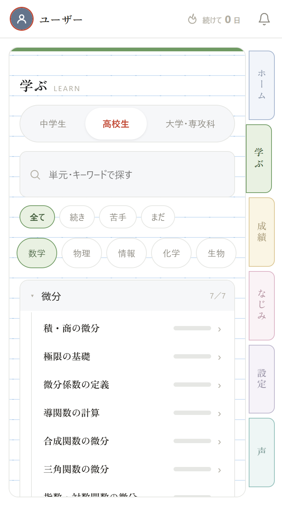

54 単元に対応しています
| 学年 | 教科 | 単元数 |
|---|---|---|
| 中学生 | 数学 | 5 |
| 中学生 | 理科 | 10 |
| 高校生 | 数学 | 12 |
| 高校生 | 物理 | 7 |
| 高校生 | 化学 | 3 |
| 高校生 | 生物 | 3 |
| 高校生 | 情報 | 3 |
| 大学・専攻科 | 数学 | 8 |
| 大学・専攻科 | 情報 | 3 |
| 合計 | 54 | |

収録単元の例。
いま入っている単元の一部です。単元は現在も追加を続けています。
- 中学 数学
- 一次方程式／一次関数／三平方の定理 ほか
- 中学 理科
- 状態変化／原子と分子／化学変化／質量保存 ほか
- 高校 数学
- 極限／微分／積分／確率 ほか
- 高校 物理
- 力学／波動 ほか
- 高校 化学
- 物質量／酸と塩基 ほか
- 高校 生物
- 光合成と呼吸／遺伝 ほか
- 高校 情報
- ネットワーク／アルゴリズム ほか
- 大学・専攻科 数学
- 行列と一次変換／ベイズの定理 ほか
- 大学・専攻科 情報
- 計算量／探索アルゴリズム ほか
単元が終わるのは、必須の概念をご自身の言葉で説明できたときだけです。当てずっぽうでは進みません。